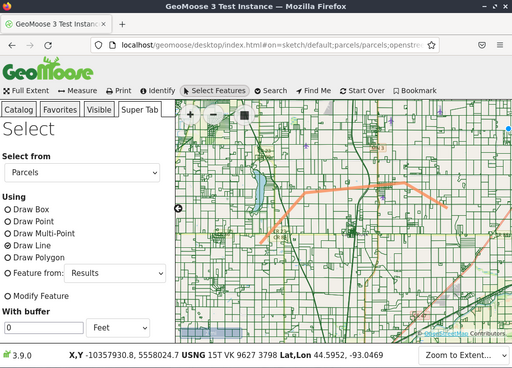
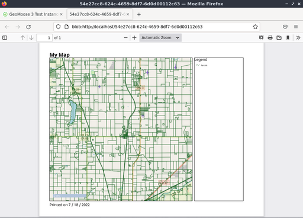

GeoMooseクイックスタート¶
GeoMooseは、分散型地図データを表示するためのブラウザベースのマッピングフレームワークです。これは、郡、市、市のオフィス(GeoMooseの起源)内の空間データと非空間データの管理に特に便利です。
GeoMooseはGISデータポータル管理フレームワークです。Live DVDにインストールされているGeoMooseのバージョンは、レイヤのサンプルセットを表示する設定例です。
GeoMooseを開始¶
デスクトップ上の 「Browser Clients」 フォルダに移動します。
デスクトップアイコン 「Start GeoMoose」 をクリックします。これによりデフォルトのブラウザが起動し、自動的に正しい場所に移動します。
Webページが表示され、GeoMooseインスタンスのデモインタフェースが表示されます。

上記のインタフェースは次のものを示しています。
- バナーバー
- ツールバー
- ナビゲーションとズームコントロールを備えたマップウィンドウ
- サイドメニュー:
- 「Jump to」 の場所のプルダウンリスト
- 「Catalog」 で始まるコントロールタブで、レイヤ一覧を表示します。必要に応じて、追加のタブが表示されます: 「Information」 の読み出し、 「Custom」 の出力タブなどです。
- フッタバー:
- 複数の座標表示:X、Y(データセットのローカル座標)、LAT/LON(10進数)、United States National Grid(USNG)
- 選択または定義するビュースケールの編集可能なプルダウンリスト。
ロケーションを識別¶
- 上部ツールバーの 「identify」 (円形アイコンの中の 「i」)ボタンをクリック
- マップ上の点をクリックしてください。

マップビューの左側に表示されるカタログが 「Super Tab」 に変わります。GeoMooseがアクションの結果を表示したり、詳細情報を要求したりする場所です。この場合、レイヤ内でクリックしたポイントについて、有効で識別可能な各マップのクエリー結果が表示されます。
測定ツールを使用¶
GeoMooseの計測ツールを使用すると、次のことができます。 * 点を計測(選択された点の座標を返す) * 複数の区間を含む可能性のある線に沿った距離を計測 * ポリゴンの面積を計測。
- 上部ツールバーの両端の矢印アイコンをクリックして、測定ツールを起動します。
- ポイント、ライン、ポリゴンの計測を選択します。
- 測定するマップ上でクリックします。点を計測するには、マップ上で計測する点をクリックします。ラインまたはポリゴンを計測するには、ライン/ポリゴンの各頂点aのマップ上でクリックします。
- ダブルクリックしてライン/ポリゴンを終了します。


注釈
手動でトレースすることなく、マップ上の既存の地物を計測することもできます(ベクタレイヤからのものであれば、前のクエリー結果を含めて)。
地物を選択¶
地物はポイント、ライン、ポリゴン、または既存の地物から選択できます。開始するには、 「Select Features」 アイコン(マウスカーソルアイコン)をクリックし、ポイント、ライン、ポリゴンを選択して、マップで選択の描画を開始します。最後の点をダブルクリックすると、描画プロセスを終了できます。選択を調整する場合は、 「地物の変更」 オプションを使用します。
描画したもののバッファバージョンに基づいてフィーチャを選択するオプションもあります。バッファサイズのデフォルト値は 「0」 であり、何も行われません。正の値を指定すると、その距離で描いたものが拡大され、負の値を指定すると縮小されます。
「クエリーレイヤ」 選択ボックスを使用して、地物を選択するレイヤを選択します。注: 地物を選択ツールで使用できないレイヤもあります。選択可能にするには、レイヤがベクタレイヤであり、マップブックで選択するように設定されている必要があります。

最後に、 「Go」 ボタンをクリックして、地物を実際に選択します。GeoMooseは、スーパータブで選択されたものの概要も返し、マップ上で選択されたフィーチャを強調表示し、選択されたフィーチャの属性テーブルを表示します。

テーブルの上にカーソルを置くと、対応する地物が強調表示されます。さらに、テーブルヘッダーのファンネルアイコンを使用して結果をさらにフィルタしたり、テーブルヘッダーの三角形アイコンを使用して結果を並べ替えたりできます。結果は、テーブルの左上にあるダウンロードアイコンを使用してCSVファイルとしてダウンロードできます。
地物を検索¶
地物を属性で検索することもできます。開始するには、ツールバーの 「検索」 メニューにカーソルを置き、 「区画検索」 アイコンをクリックします。Super Tabに検索パラメータを入力し、 「Go!」 ボタンをクリックします。

次のスクリーンショットは、 「frank」 という名前を含むすべての区画所有者の検索を示しています。

3つの結果が一覧に表示され、マップ上で強調表示されます。

虫眼鏡アイコン/区画番号をクリックすると、次のスクリーンショットに示すように、特定の区画にズームします。

マップを印刷¶
次のスクリーンショットは、GeoMooseのデモで提供されている印刷ツールの外観を示しています。印刷ツールをクリックすると、ダイアログが表示され、印刷されるマップのタイトル、ページサイズと回転、印刷解像度、印刷内容のプレビューが表示されます。

ダイアログの[印刷]ボタンをクリックすると、PDFの印刷出力が生成され、開いたり保存したりできます。
